ARRIVAL — KILIMANJARO AIRPORT
GETTING A VISA
Citizens of most countries can get a visa upon arrival in Tanzania, but applying online in advance is a way to avoid possible queues at the airport. This is easy to do on the website of Immigration Service and usually takes up to 7 days.
Citizens of most countries apply for regular single-entry visa that costs $50. Holders of American passports should apply for multiple-entry visa, and it costs $100. Your manager will share an application manual to simplify the process for you.
COVID-19 REGULATIONS
Traveling to Tanzania
is easy and pleasant! Travelers fully immunized by WHO-approved vaccines are
exempted from PCR and rapid antigen testing requirements.
Please carry a printed copy of your vaccination certificate to board flights.
Don't hesitate to contact your manager if you need help with requirements for
non-vaccinated travelers.
TransferKILIMANJARO AIRPORT -> AISHI MACHAME HOTEL
Duration:50 ~ 60 minutes
Passengers
6 Adults
AccommodationAISHI MACHAME HOTEL
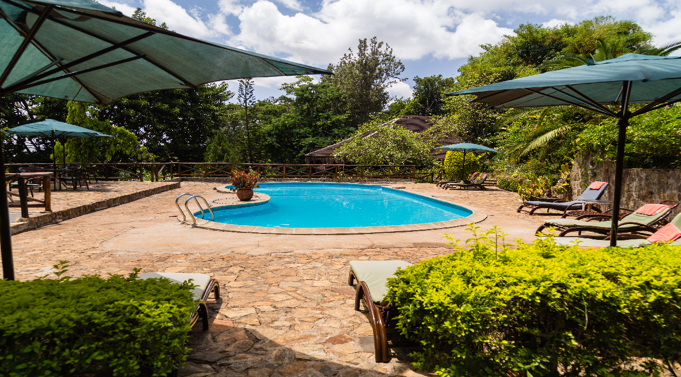
Accommodation details
Quietly nestled in the green foothills of Mt Kilimanjaro, Aishi Machame Hotel is a perfect place to recharge and gain strength before the climb. The territory of the hotel is one lush beautiful garden with trees blooming and birds chirping all around. Lots of wild animals have long made Aishi Machame Hotel a place of their permanent residence. On a warm day you can go to the swimming pool cozily fenced by the greenery and bask in the African sun.
- Laundry Service
- Wildlife Area
- Restaurant
- WiFi
- Swimming Pool
27JUL
2023
KILIMANJARO CLIMB VIA LEMOSHO ROUTE
This is one of the best routes on Kilimanjaro with excellent high-altitude acclimatization and beautiful panoramic landscapes. Throughout the trek your guides will share about Tanzania’s nature and local life, you will experience fun evenings at the overnight camps and witness unforgettable African sunsets.
Climbing Lemosho begins with an altitude of 3,500 meters above sea level on the western slope of Kilimanjaro. You will pass through five climatic zones of Kilimanjaro, including equatorial, rainforest, and arctic. It’s like hiking from the hot equator to snowy Antarctica in just a week!
Travel recommends the seven-day Lemosho route for both beginners and experienced mountain hikers. The ascent does not require any special equipment or skills - what is the basic or beginner level of ‘technical’ for the climbing world. According to our statistics, 98 out of 100 people successfully reach the summit along the seven-day Lemosho route, making it the most successful route of all! This is one of our favorite routes, and it is along Lemosho that we led the legendary Wings of Kilimanjaro expeditions, Red Bull and National Geographic trekking teams.
Expedition day 1MORUM BARRIER GATE > SHIRA 1 CAMP
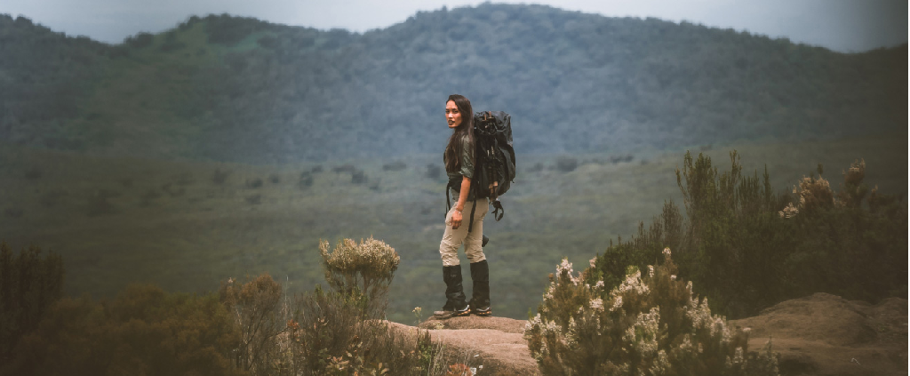
A guide and a mountain support crew will arrive at the hotel in the morning in order to meet you and hold a quick briefing, after which you will travel by vehicle (roughly 3–4 hours) to Kilimanjaro National Park's western entrance: Londorossi Gate. After the quick formality of acquiring climbing permits and registering with the search and rescue service, the group continues upwards towards their drop off point by off-road vehicles (reaching 3,500 meters). Here you can see stunning views of the Shira Plateau for the first time.
The route from your drop off point to your first high-altitude camp, Shira 1 features a small gain in altitude and is not very physically challenging. Due to this, you will be able to properly begin the process of acclimatization. By the time you reach the camp, our professional mountain crew will have already prepared everything necessary, put up the tents and begun preparing dinner.
This will be your first day at this altitude, so it is strongly recommended you heed the following instructions from this point on:
· Abstain from consuming alcohol and caffeine
· Drink over 4 liters of bottled water daily (little by little, frequently)
· Take a Diamox pill to help alleviate symptoms of altitude sickness. Most mountain climbers take Diamox in the morning, before they start their ascent, in order to reduce discomfort associated with altitude sickness. We recommend you consult your doctor prior to the trip in case of potential allergies.
At night you may experience discomfort associated with acclimatization to the high altitude: because of a reduction in your waking breathing pattern, your body gets less oxygen than during the day. Taking altitude into account, you may therefore start feeling sick and have a headache. Pay attention to your own body and tell your guide if you start feeling any symptoms of altitude sickness.
Change in Elevation: Morum Barrier Gate (3500 m/11483 ft) Shira 1 Camp (3610 m/11844 ft)
- Distance:13 km
- Average day t°:5 °C
- Moon phase:First Quarter
- Trekking time:1 hour
- Average night t°:-4 °C
28JUL
2023
Expedition day 2SHIRA 1 CAMP > SHIRA 2 CAMP
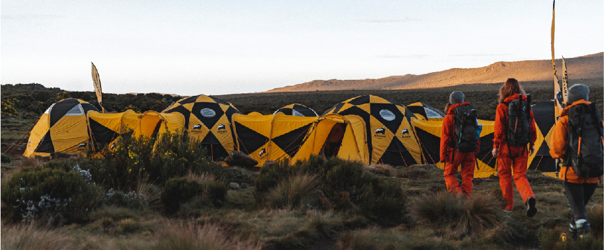
This day you will depart from Shira 1 Camp in the morning and complete a light trek toward the second high altitude camp: Shira 2 Camp. This trek is not difficult and you will be able to enjoy spectacular views of Africa and the unique flora of Kilimanjaro. Shira 2 Camp is the best place on the trip to see Mount Meru (the fifth summit of Africa and second-highest in Tanzania), weather permitting.
When you arrive to camp you will have lunch, and after a two-hour rest everyone will complete an acclimatization hike towards Lava Tower Camp that features a 200-meter gain in altitude.
The acclimatization hike is an easy trek with a slight gain in altitude done in order to speed up the acclimatization process. You should take the acclimatization hikes very seriously. They help increase your chances of successfully summiting Kilimanjaro and save you from the consequences of altitude sickness.
Change in Elevation: Shira 1 Camp (3610 m/11844 ft) Shira 2 Camp (3850 m/12631 ft)
- Distance:10 km
- Average day t°:5 °C
- Moon phase:First Quarter
- Trekking time:4 hours
- Average night t°:-4 °C
29JUL
2023
Expedition day 3SHIRA 2 CAMP > BARRANCO CAMP
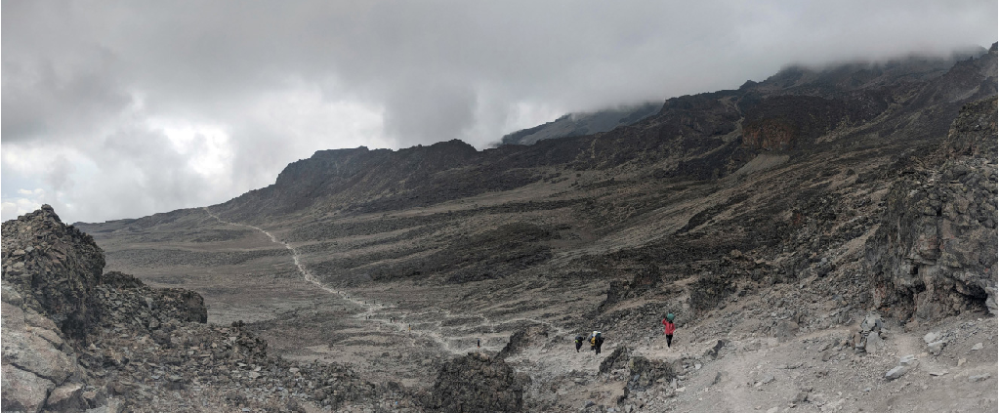
After breakfast you will leave Shira 2 Camp and start your way to the key point of the route: Lava Tower. This section of the route has a lot of ascents and descents that end at a camp at over 4,600 meters. It might be difficult, and it is common to feel some discomfort, but in order to successfully acclimate to the altitude you have to spend at least 1–2 hours here. For that reason, your group will enjoy your lunch at the top of Lava Tower, in order to help you acclimatize better.
Then you will descend to Barranco Camp. Here you can see the famous Barranco Wall, impressive in both its massive size and steepness! The next day you will be climbing it, but don't worry, it features a very simple hiking trail.
If one or more participants feel sick, the group may refrain from passing the Lava Tower and adjust the route, following instead the road for porters. In this case you will not reach an altitude of 4,630 meters, getting up only to a maximum of 4,400 meters.
Change in Elevation: Shira 2 Camp (3850 m/12631 ft) Barranco Camp (3900 m/12795 ft)
- Distance:10 km
- Average day t°:5 °C
- Moon phase:First Quarter
- Trekking time:6 hours
- Average night t°:-4 °C
30JUL
2023
Expedition day 4BARRANCO CAMP > KARANGA CAMP
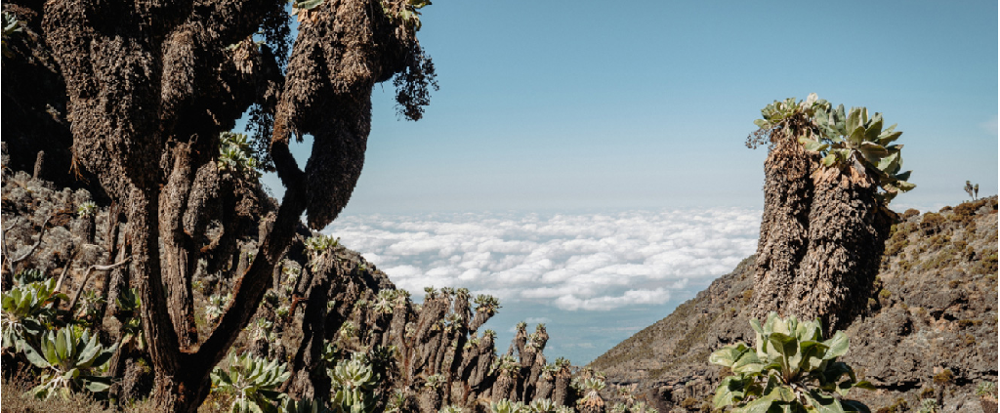
This day your group will get an early start and after a filling breakfast, begin to tackle Barranco Wall. We recommend you leave the camp as early as possible to avoid crowds of the other groups, which can slow you down. Hiking up the gorge wall is not difficult and only takes around an hour. After the climb you can have a rest and take photos in front of the Kibo volcano.
Then you start a more difficult hike to Karanga Camp, which features numerous ascents and descents during the route, but don't worry: our guides are experts at choosing an optimal pace for the group. After reaching the camp you will be offered warm lunch.
After a couple of hours you will have to complete an acclimatization hike in the direction of Barafu Camp with a 200-meter gain in altitude, and then descent back down to the camp.
Change in Elevation: Barranco Camp (3900 m/12795 ft) Karanga Camp (3995 m/13107 ft)
- Distance:6 km
- Average day t°:5 °C
- Moon phase:First Quarter
- Trekking time:4 hours
- Average night t°:-4 °C
31JUL
2023
Expedition day 5KARANGA CAMP > BARAFU CAMP
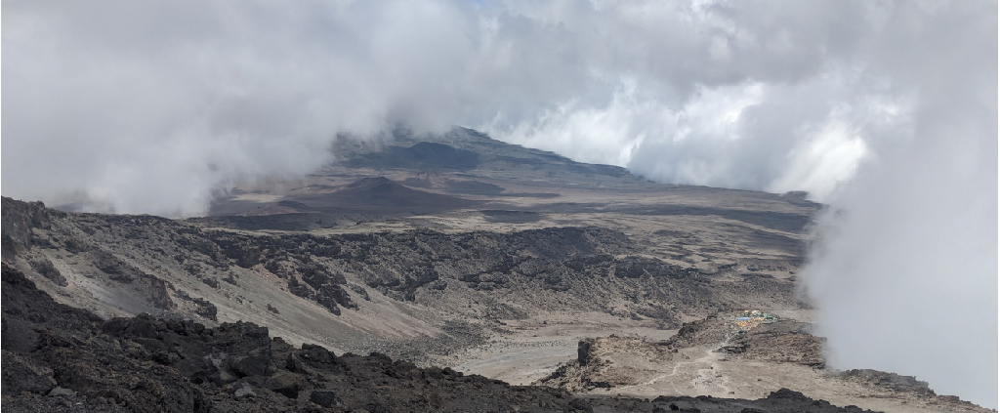
In the morning, after a warm and hearty breakfast you begin your way to Barafu Summit Camp. This camp is the starting point for a night summiting Uhuru Peak (5,895 m) and your end goal. Our team will set up camp ahead of time, so when you arrive your tents and sleeping bags will already be prepared, meaning you can just relax when you reach Barafu Summit Camp.
After regaining strength, you have to complete an acclimatization hike towards the intermediate Kosovo Summit Camp (4,800 m) and then back to Barafu Camp, where you will be served a hot dinner. It is better to spend the remainder of the day resting and sleeping before the night summit.
Change in Elevation: Karanga Camp (3995 m/13107 ft) Barafu Camp (4673 m/15331 ft)
- Distance:4 km
- Average day t°:-2 °C
- Moon phase:First Quarter
- Trekking time:4 hours
- Average night t°:-11 °C
01AUG
2023
SUMMIT NIGHT
Reaching the summit is the literal and figurative peak of your Kilimanjaro trek. This night, you will depart the camp and walk along the edge of the crater rim. Finally, you will climb to the highest point in Africa, Uhuru Peak, and stand at 5,895 meters. This is truly a great achievement and a test of your own strength and stamina.
In order for your climbing group to reach the summit by dawn, you will depart the camp around midnight. During the ascent, a team of special high-altitude porters will join the guides to assist climbers. These porters are selected because they have expressed their interest in becoming guides and want to expand their experience by learning the route and requirements to help climbers reach the top. As they have been undergoing additional training, they are prepared to help ensure safety of climbing participants and alert the guides to any issues immediately. Ratio of climbers to guides or guides-in-training of 1:1 for the final ascent. This means that a well-trained specialist of our company will be helping each expedition participant as they climb through the night to reach the summit.
During the final stages of the climb, the guides will have thermoses with hot tea, first-aid kits and oxygen cylinders. They will constantly monitor the well-being of the participants and offer assistance as needed. This may be a warm drink to help re-energize you to reach your goal, or help carry your backpack during the last push.
Once you arrive atop Uhuru Peak you will spend about 30-40 minutes taking photos and watching an amazing sunrise with a view across Africa. If you still have enough strength, you can ask the guides to descend into the crater and walk to the distant glaciers. As the sun rises an interesting play of color begins - the rays of the sun shine on the surface of the glaciers and gives them a lovely peach hue, like something from another world. Unfortunately, the glaciers are expected to melt very soon and your trek up to Kilimanjaro is one of the last opportunities to witness them in person.
As the morning progresses, you will trek back down to the camp where a large breakfast awaits your team. After eating, you are invited to sleep before a leisurely trek back to the next overnight camp as you complete your descent.
Expedition day 6BARAFU CAMP > UHURU PEAK > MILLENIUM CAMP
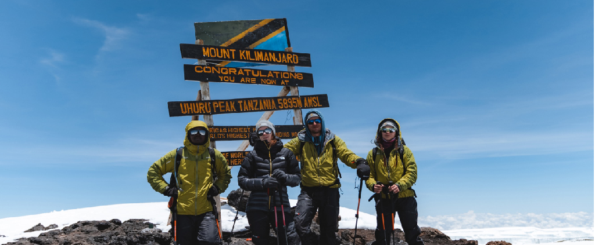
Your group will depart from Barafu Camp at night and start the final summit of Kilimanjaro to Uhuru Peak (5,895 m). Technically speaking, the climb is relatively simple, however at the high altitude even regular physical activity can feel strenuous. Therefore, climbers will be paired into twos, under the care of a personal guide for the entire ascent, this is in order to monitor your physical and mental conditions more closely. After your successful ascent to Uhuru Peak, you can descend to the nearest glacier if desired. Then you will return to Barafu Camp and after a 2-hour rest continue your descent to Millennium Camp.
Don't forget that 90% of all accidents occur during the descent, including all broken arms and legs. Please pay attention to your feet, as there is a high risk of damaging your toenails.
Change in Elevation: Barafu Camp (4673 m/15331 ft) Uhuru Peak (5895 m/19341 ft) Millenium Camp (3950 m/12959 ft)
- Distance:14 km
- Average day t°:-11 °C
- Moon phase:First Quarter
- Trekking time:13 hours
- Average night t°:-20 °C
02AUG
2023
Expedition day 7MILLENIUM CAMP > MWEKA GATE
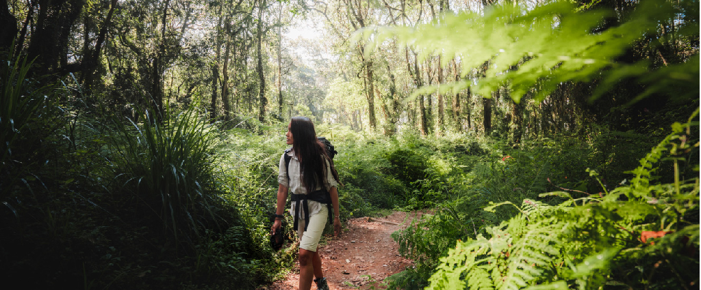
The camp is situated in a tropical rainforest. When you wake up, you will feel relief from the reduction of the height and the satisfaction of reaching the summit. After a warm breakfast, you will head for the park's exit: Mweka Gate. After your descent the whole group will gather to congratulate you, followed by offering you a chance to share your opinions on the climb in the guestbook. Lastly, we will present you with your commemorative certificates in our office and provide you a transfer back to the hotel.
Change in Elevation: Millenium Camp (3950 m/12959 ft) Mweka Gate (1640 m/5381 ft)
- Distance:13 km
- Average day t°:5 °C
- Moon phase:Full Moon
- Trekking time:5 hours
- Average night t°:-4 °C
AccommodationAISHI MACHAME HOTEL
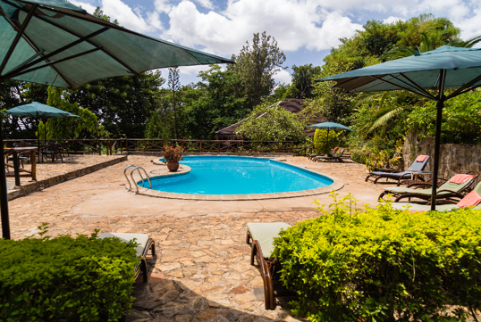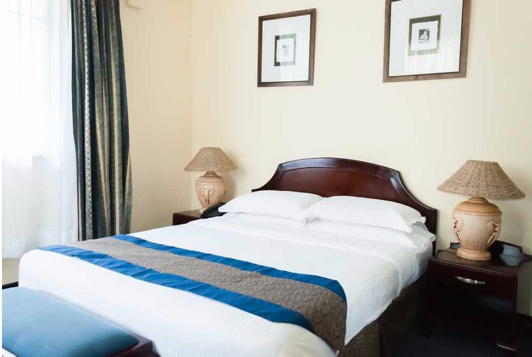
Accommodation details
Quietly nestled in the green foothills of Mt Kilimanjaro, Aishi Machame Hotel is a perfect place to recharge and gain strength before the climb. The territory of the hotel is one lush beautiful garden with trees blooming and birds chirping all around. Lots of wild animals have long made Aishi Machame Hotel a place of their permanent residence. On a warm day you can go to the swimming pool cozily fenced by the greenery and bask in the African sun.
03AUG
2023
REST DAY
Use this day to slow down and feel the vibe of Tanzanian Pole Pole. You can relax by the pool with a cocktail, have Spa, go shopping or do a day-trip to one of the smaller local gems. There's plenty of options to choose from and suit your individual travel style. Ask your manager to help you plan this day and make desired arrangements.
TransferKILIMANJARO AIRPORT -> GRAN MELIA ARUSHA
Duration:60 ~ 70 minutes
Passengers
2 Adults
TransferAISHI MACHAME HOTEL -> GRAN MELIA ARUSHA
Duration:60 ~ 70 minutes
Passengers
6 Adults
AccommodationGRAN MELIA ARUSHA
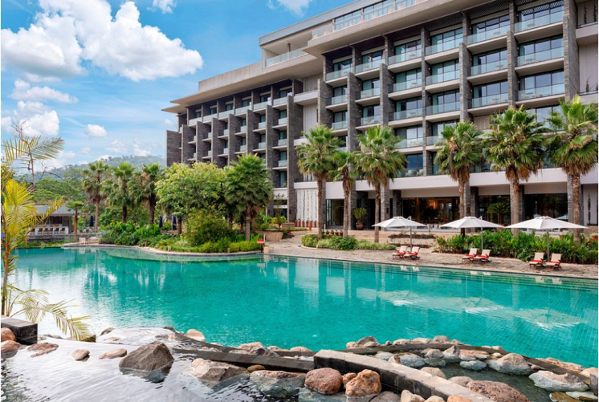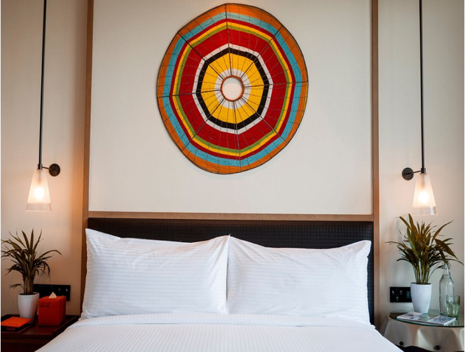
Accommodation details
An oasis within Arusha set out on 18 acres of beautiful landscaped coffee and tea plantations. Pure tranquility with spectacular views of Mount Meru. Fitness or relaxation? With a tranquil spa and heated pool, 24-hour gym and 1.5 km running track, the choice is all yours.
04AUG
2023
SafariTARANGIRE NATIONAL PARK
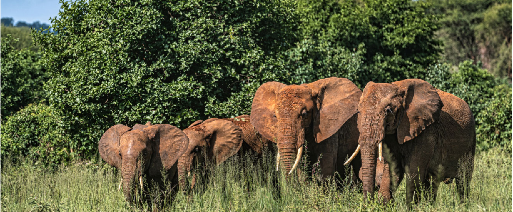
Today your safari will take place in Tarangire National Park. This is one of the most interesting places in Tanzania! The river of the same name flows through the park, where giraffes, zebras, antelopes and buffaloes come to drink. These animals attract predators, which is why a lot of lions live in Tarangire. You will definitely see them during your trip.
In the dry season, the Tarangire River becomes the only source of drinking water for many kilometers around. Because of this, large herds of elephants come to Tarangire, making Tarangire the home to the largest population of elephants in Northern Tanzania for most of the year (especially June - October and December - March). Elephants are not at all intimidated by visitors to the park, and they often come quite close to cars. This is completely safe - since elephants have no enemies in their natural nature they are naturally curious and unafraid..
Tarangire National Park is also known for its ancient baobab trees. These massive trees are larger and older than any other park in continental Africa. The scenery, accented with these signatory trees is simply stunning.
AccommodationKARATU SIMBA LODGE
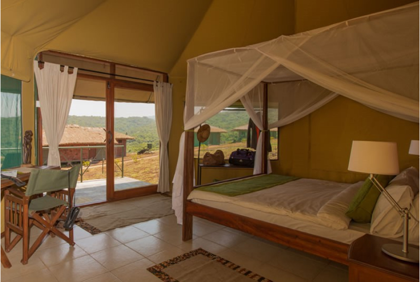
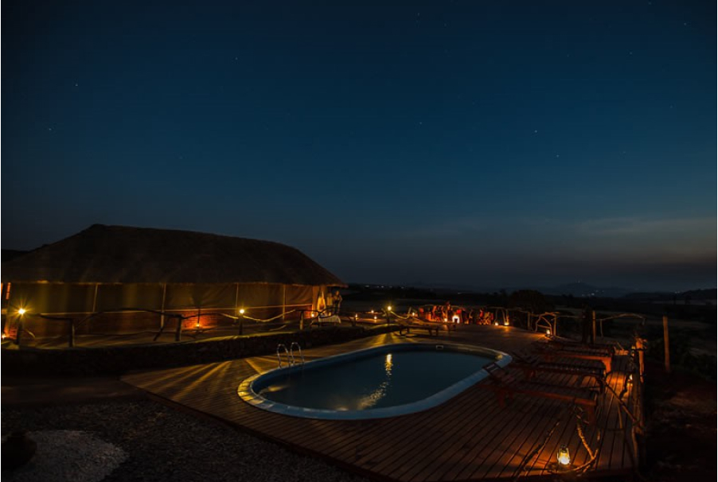
Accommodation details
Embraced by the
restful Ngorongoro Forest landscape, this quiet and home-like 3-star lodge is
the perfect place to regain energy after a long and dusty day on safari.
Here you can be fully emerged in the tranquility of pastoral life with its
nutritiously delicious meals and surrounding fertile fields of barley, corn,
wheat and sunflowers. A swimming pool, small but really snug, is arranged some
further and lower from the tents, among the hills. From your tent, you can spot
a distant view of the rim of Ngorongoro Crater.
05AUG
2023
SafariNGORONGORO CONSERVATION AREA
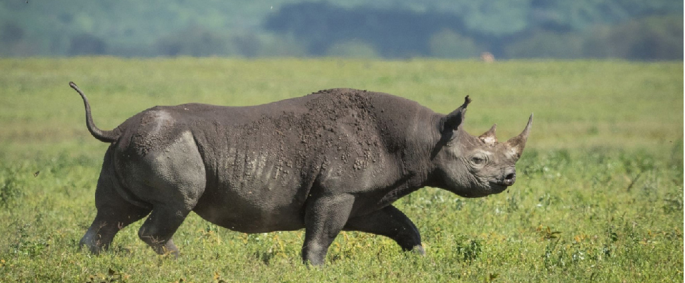
Today you are going to the Legendary Ngorongoro Crater! Your day will begin early in the morning, when your guide arrives to drive you to the Ngorongoro Crater, part of the Ngorongoro Conservation Area. The Crater is somewhat reminiscent of The Lost World by Sir Arthur Conan Doyle: here you will witness tens of thousands of wild animals living in the massive crater left by a huge ancient volcano. The actual crater is relatively small, when you consider that it is home to the most variety of animals per square meter than anywhere else in the world! Here, you are sure to see a great number of animals within close proximity to one another.
The descent into the crater will take about half an hour of driving. The road passes through beautiful, lush forests with great scenery. Your safari guide will make a stop to see the ‘look out’ which is a place offering a stunning panoramic view of the entire crater. Contrary to popular myth, animals can go outside the caldera. However, most of them are safe and comfortable inside the caldera which provides an unlimited supply of fresh grass for grazers and easy prey for predators. Therefore, they prefer to remain in the crater t all the time.
Elephants, buffaloes, antelopes, lions, cheetahs, zebras and other African animals can be seen in Ngorongoro Crater. This is one of the few places in Africa where rhinos are found, although, remember that they are an endangered species, so there are very few of them. One animal that is absent are giraffes; you will not spot any of them in the crater because, due to the build of their bodies, including legs and long necks, they cannot walk down into the crater.
After your morning game drive around the crater, you will stop at the picnic area next to Lake Magadi for a snack and rest. This place is popular with various birds, including kites, who sometimes try to steal food right from the table! While not dangerous, at all, it is a good idea not to leave any food unattended. One of the draws of Lake Magadi are the hippos that live in the area. You’re sure to enjoy watching them while you eat lunch. These huge animals stay close to the shore and often surface to get air. If you do see one walking out of the water, give it plenty of space. Due to the large number of animals and endemic plants, Ngorongoro Conservation Area is a UNESCO World Heritage Site and renowned for its natural significance in the world.
Please do not feed animals in Ngorongoro or any other parks in Tanzania. Even if you really want to treat a small bird or monkey, you should not do this - you will only harm them. Human food disrupts the natural diet of animals and can lead to their early death!
Remember, this is not just our request. This is a law which is enforced by park rangers. Any person caught feeding wildlife or violating other park rules may be fined.
AccommodationKARIBU SERENGETI SAMETU CAMP
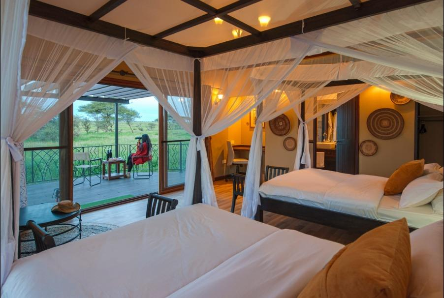
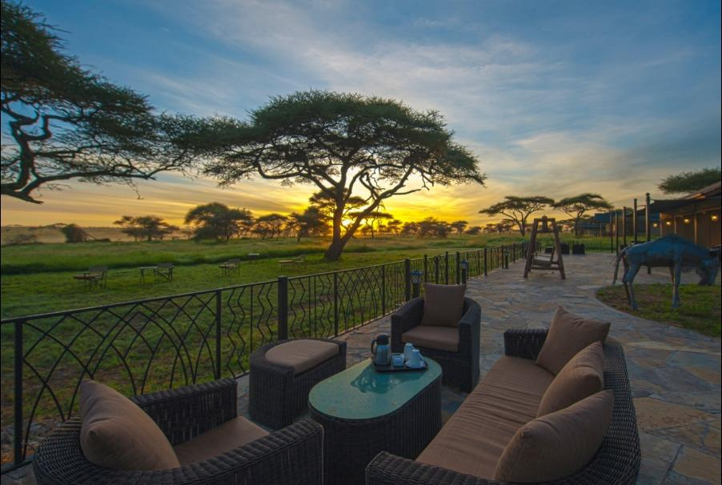
06AUG
2023
SafariSERENGETI NATIONAL PARK — SERONERA
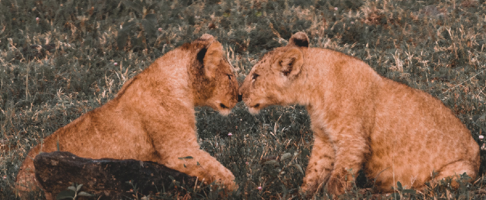
Today you will go to the most famous safari park in the world - Serengeti. This is one of the largest parks in Tanzania and has a large population of wildlife. Here, you are sure to see: lions, antelopes, elephants, giraffes, buffaloes and zebras. There is a good chance of spotting cheetahs, serval cats and other rare animals of the African savannah. The Serengeti is a designated UNESCO World Heritage Site, chosen because of its important ecosystem, the dense population of animals and the annual Great Migration. Serengeti was the inspiration for Disney’s “Lion King” feature film, but life here is not a cartoon - it is pure, wild and beautiful. The day will take place in the central Serengeti, in a remarkably beautiful area called Seronera.
AccommodationKARIBU SERENGETI SAMETU CAMP
07AUG
2023
SafariSERENGETI NATIONAL PARK — SERONERA
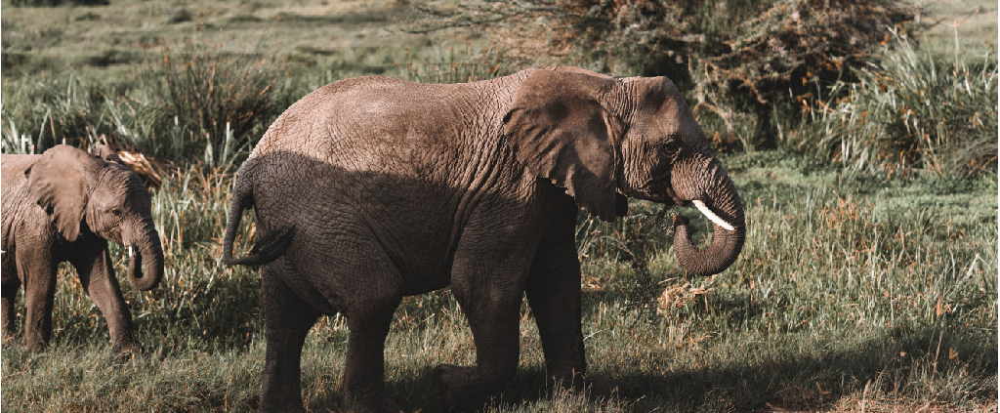
Your adventure continues in the central part of the Serengeti. Seronera is a huge space, brimming with life. It is impossible to view it all in one day; today, your guide will show you new places and interesting animals, so that you can get a full perspective of Serengeti’s Seronera. It is in the Serengeti that the rarest African animals live: rhinos, leopards, serval cats and caracals. This second day increases your chances of seeing these rare animals in the wild.
If you want to stretch your legs, drop by the Serengeti Visitors’ Center. There is a cafe where you can relax and have a bite to eat, as well as a museum where park staff share interesting stories about the history of Serengeti Park, its wildlife and special features.

TRANSIT THROUGH NGORONGORO CONSERVATION AREA
You will transit through the Ngorongoro Conservation Area. While Ngorongoro Crater usually receives the most attention, actually the entire area is a protected site and home to a tropical rainforest and many animals. Your guide will take you through beautiful landscapes, including savannah and tropical forest as you continue on your trip. You will likely see baboons, buffaloes and even elephants during this drive. If you’re especially lucky you might even spot a cheetah hiding in the long grass, so keep your eyes open!
First, your driver will make a brief stop at the Ngorongoro Gates to process the entry paperwork. You’re welcome to exit the vehicle here, but please ensure you close all car windows. There are monkeys around the Entrance Gate and they are used to tourists, these little thieves have been known to enter unattended cars and take things! They often get very close to tourists and don't fear them at all, so please do not approach the monkeys, even if they are very cute.
AccommodationGRAN MELIA ARUSHA
An oasis within Arusha set out on 18 acres of beautiful landscaped coffee and tea plantations. Pure tranquility with spectacular views of Mount Meru. Fitness or relaxation? With a tranquil spa and heated pool, 24-hour gym and 1.5 km running track, the choice is all yours.
08AUG
2023
TransferGRAN MELIA ARUSHA -> KILIMANJARO AIRPORT
Duration:60 ~ 70 minutes
Passengers
8 Adults
DEPARTURE — KILIMANJARO AIRPORT
Driver will pick you
up from your accommodations and take you to the airport. If you're flying out
with an international flight, please be ready to leave the hotel 4 hours before
the scheduled take-off. If you're taking a domestic flight, you'll need to
leave 3 hours before the flight.
Important about PCR tests: If you need a PCR test for your flight
out of Tanzania, make sure to inform your manager in advance. It takes 48-72
hours to receive results, so we should have enough time to schedule your
testing.
We wish you a pleasant flight!